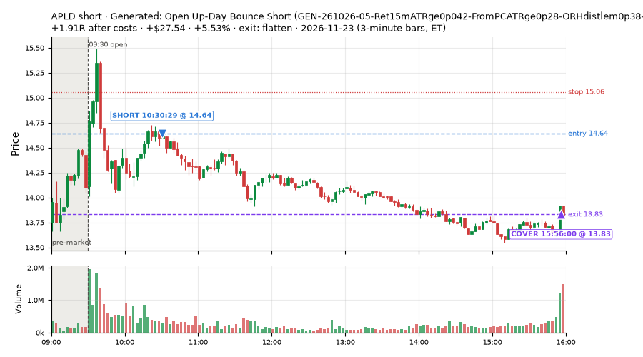
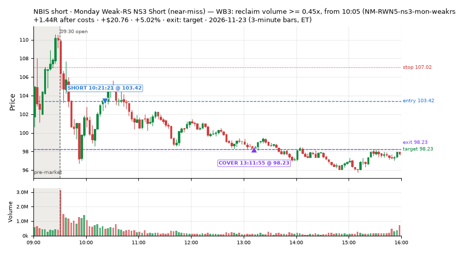
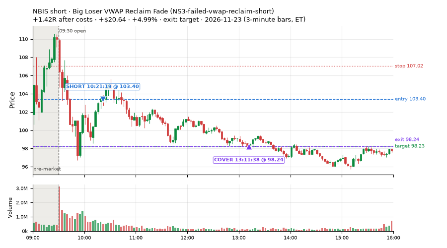
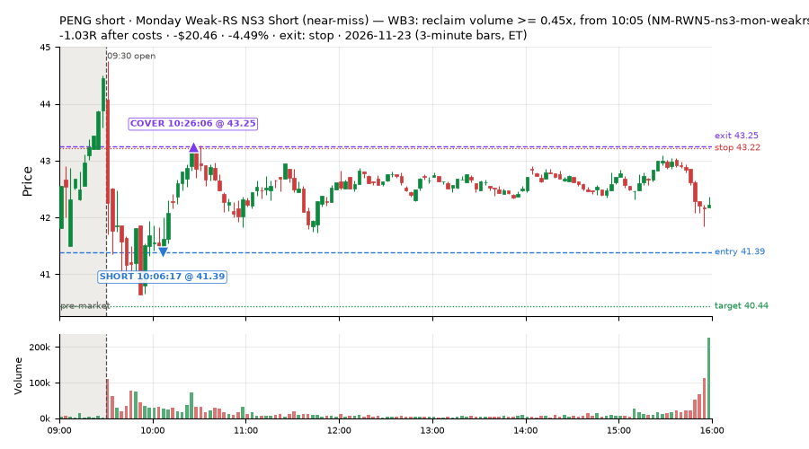
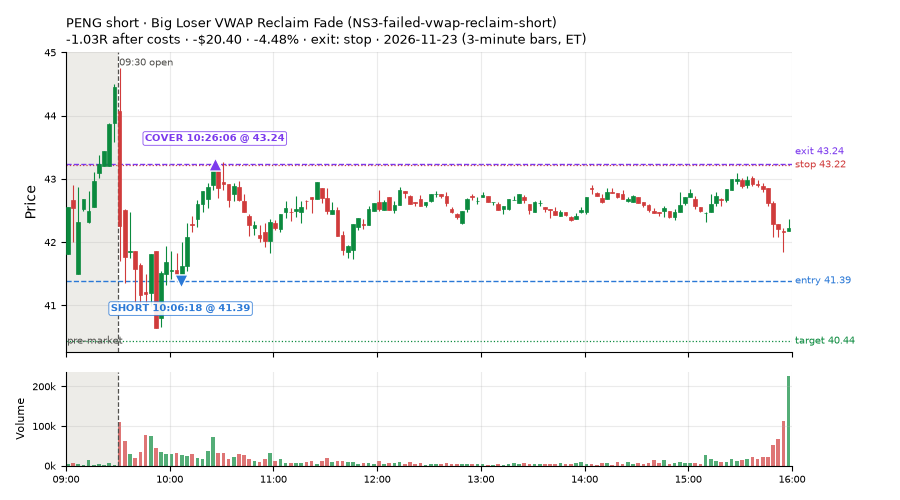
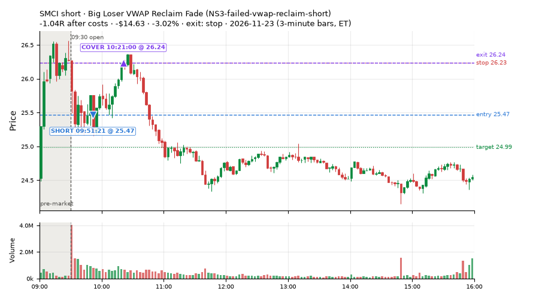
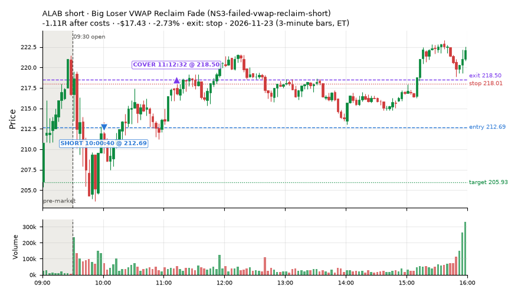

432 trades · win rate 44% · P/L $269.42
PROBATION: no live setup has passed both locked test periods. 10 owner-directed setups added 2026-10-08 (MarcoFlow top 5 + 5 new), untested live. RW6G1 (RW6 + VWAP band guard) added 2026-10-09, probation.

| Symbol | Setup | Side | In | Out | Entry | Exit | Exit reason | % gained | P/L |
|---|---|---|---|---|---|---|---|---|---|
| APLD | Generated: Open Up-Day Bounce Short (GEN-261026-05-Ret15mATRge0p042-FromPCATRge0p28-ORHdistlem0p38-OPEN-BRopgt0p5-hold-short) | short | 10:30 | 15:56 | 14.64 | 13.83 | flatten | +5.53% | $27.54 |
| NBIS | Monday Weak-RS NS3 Short (near-miss) — WB3: reclaim volume >= 0.45x, from 10:05 (NM-RWN5-ns3-mon-weakrs-short-WB3) | short | 10:21 | 13:11 | 103.42 | 98.23 | target | +5.02% | $20.76 |
| NBIS | Big Loser VWAP Reclaim Fade (NS3-failed-vwap-reclaim-short) | short | 10:21 | 13:11 | 103.40 | 98.24 | target | +4.99% | $20.64 |
| Symbol | Setup | Side | In | Out | Entry | Exit | Exit reason | % lost | P/L |
|---|---|---|---|---|---|---|---|---|---|
| PENG | NM-RWN5-ns3-mon-weakrs-short-WB3 | short | 10:06 | 10:26 | 41.39 | 43.25 | stop | -4.49% | $-20.46 |
| PENG | NS3-failed-vwap-reclaim-short | short | 10:06 | 10:26 | 41.39 | 43.24 | stop | -4.48% | $-20.40 |
| TECL | NS3-failed-vwap-reclaim-short | short | 10:01 | 10:25 | 117.29 | 121.66 | stop | -3.72% | $-17.47 |
| SMCI | NS3-failed-vwap-reclaim-short | short | 09:51 | 10:21 | 25.47 | 26.24 | stop | -3.02% | $-14.63 |
| ALAB | NS3-failed-vwap-reclaim-short | short | 10:00 | 11:12 | 212.69 | 218.50 | stop | -2.73% | $-17.43 |







Signal to fill: median 2s, 90th percentile 3s (432 trades). Bars close each minute; the order follows the bar close.
Best excursion (MFE): median 0.17R; worst (MAE) median 0.24R. 62% of trades never got +0.25R in our favour; 1 reached +1R and still closed at or below 0.
| Symbol | Setup | Best R | Worst R | Closed R |
|---|---|---|---|---|
| SQQQ | GEN-261027-07-RSI14le35-FromOpenge2-AM-BRvwlt0p5-t1s1-short | +1.11 | -1.08 | -1.09 |
| ALAB | NS3-failed-vwap-reclaim-short | +0.98 | -1.09 | -1.11 |
| RBLX | GEN-261026-05-Ret15mATRge0p042-FromPCATRge0p28-ORHdistlem0p38-OPEN-BRopgt0p5-hold-short | +3.19 | -0.62 | +1.29 |
| CL | GEN-261027-07-RSI14le35-FromOpenge2-AM-BRvwlt0p5-t1s1-short | +0.65 | -1.01 | -1.11 |
| TECK | GEN-261026-05-Ret15mATRge0p042-FromPCATRge0p28-ORHdistlem0p38-OPEN-BRopgt0p5-hold-short | +0.50 | -1.05 | -1.08 |
| Entry time | Trades | Win | Avg R | P/L |
|---|---|---|---|---|
| 09:50-10:30 | 99 | 54% | +0.06 | $147.15 |
| 10:30-11:30 | 116 | 39% | +0.14 | $112.09 |
| 11:30-13:00 | 136 | 39% | -0.04 | $-86.57 |
| 13:00-14:00 | 54 | 28% | -0.05 | $-40.05 |
| 14:00-16:00 | 27 | 85% | +0.32 | $136.80 |
| Setup | Trades | Win | Avg R after costs | Adj R (net of SPY) | Avg R ex-market (all sessions) | P/L |
|---|---|---|---|---|---|---|
| Generated: Open Up-Day Bounce Short (GEN-261026-05-Ret15mATRge0p042-FromPCATRge0p28-ORHdistlem0p38-OPEN-BRopgt0p5-hold-short) | 20.0 | 85% | +0.98 | +0.44 | +0.15 (beta -0.78, n 25) | $181.27 |
| Generated: Late Pullback Buy (MACD rising) (GEN-261027-01-MACDhge0p12-Ret15mATRlem0p069-LATE-BRvwgt0p5-t05s1-long) | 14.0 | 93% | +0.34 | +0.35 | +0.24 (beta -0.73, n 17) | $88.98 |
| Generated: Morning Up-Stock Dip Short (GEN-261027-07-RSI14le35-FromOpenge2-AM-BRvwlt0p5-t1s1-short) | 4.0 | 0% | -0.83 | -0.69 | -0.42 (beta -1.42, n 38) | $-26.02 |
| Generated: Late Gap-Down Oversold Buy (GEN-261028-04-ORBfailUp-RSI14le22-Gaplem1p2-LATE-BRvwgt0p5-holdtr-long) | 1.0 | 100% | +0.01 | -0.32 | – | $0.15 |
| Index Dip Bounce 5 3x S&P (IDX5-spy050-0945-3x-trail) | 1.0 | 100% | +0.46 | +0.25 | – | $7.62 |
| * SPY Dip of 0.30%, Breadth Turn (SPXL, trailing) (near-miss) (LD8-spy-dip030-breadthturn-spxl-holdtr-long) | 1.0 | 100% | +0.27 | +0.15 | – | $4.19 |
| Late-Day ETF Dip Buy — WB4: more dips (refire, looser DI, falling-hour guard) (NM-ETF-late-dip-di-long-WB4) | 8.0 | 100% | +0.55 | +0.66 | +0.23 (beta +1.22, n 36) | $54.42 |
| Monday Weak-RS NS3 Short (near-miss) — WB3: reclaim volume >= 0.45x, from 10:05 (NM-RWN5-ns3-mon-weakrs-short-WB3) | 32.0 | 72% | +0.35 | +0.28 | +0.12 (beta -1.47, n 32) | $180.73 |
| Big Loser VWAP Reclaim Fade (NS3-failed-vwap-reclaim-short) owner-directed; holdouts once: Sep-Oct +0.119R n65, Apr-Jun -0.136R n524 | 41.0 | 61% | +0.15 | +0.09 | -0.00 (beta -1.12, n 61) | $117.84 |
| With-the-Gap Continuation, Long (ULT-05-withgap-cont-long) | 310.0 | 32% | -0.07 | -0.08 | -0.05 (beta +0.12, n 315) | $-339.76 |
Market direction (SPY, beta 1) accounted for $65.58 of today's $269.42; the rest ($203.84) came from the setups themselves. Avg R net of SPY: +0.01 (incl. a hedge leg's cost; report only).
20 setups live today. Today: 876 signals, 432 taken, 27 lost because another setup held the symbol (3%). Since 2026-11-12 (8 sessions): 1658 signals, 809 taken, 30 lost to other setups (2%). Peak open positions today 149 of 400 slots. Earnings blackout removed 148 symbols before scanning.
Simulated playing time (not live): 849 what-if trades of signals not taken, avg +0.01R, 50% winners; of them 30 lost to another setup (avg -0.10R).
Silent: LIQ-pdl-sweep-open15-vwap-long
| Prio | Setup | Today sig / taken | Sessions | Signals / taken / trades | Taken/day | Expected/day | Lost to other setups | Lost to (setup n) | Top skip reasons | SIMULATED: not-taken n / avg R / win | Verdict |
|---|---|---|---|---|---|---|---|---|---|---|---|
| 1 | Late-Day ETF Dip Buy — WB4: more dips (refire, looser DI, falling-hour guard) NM-ETF-late-dip-di-long-WB4 | 10 / 8 | 5 | 43 / 36 / 36 | 7.20 | – | 1 | NS3-failed-vwap-reclaim-short 1 | other 4, spread / quote / size 2, symbol held by another setup 1 | 7 / +0.15R / 71% | ok 36.0 entries/week |
| 2 | Gap-Down Early Bounce Short (all day) — WB3: SPY-after-09:50 gates + gap < -0.5% + end 13:00 RW7-gapdn-bounce-early-short-FD-WB3 | 0 / 0 | 5 | 138 / 101 / 101 | 20.20 | – | 1 | GEN-261028-09-FlowShiftlem0p65-ADX7le23-AM-BRoplt0p35-t05s1-long 1 | spread / quote / size 32, not shortable / shorts off 4, symbol held by another setup 1 | 37 / -0.06R / 49% | ok 101.0 entries/week |
| 3 | Monday Weak-RS NS3 Short (near-miss) — WB3: reclaim volume >= 0.45x, from 10:05 NM-RWN5-ns3-mon-weakrs-short-WB3 | 49 / 32 | 5 | 49 / 32 / 32 | 6.40 | – | 0 | – | spread / quote / size 11, other 4, not shortable / shorts off 2 | 17 / +0.09R / 47% | ok 32.0 entries/week |
| 4 | Generated: Lunch New-Low Short (selling) — WB1: down >= 1.3 ATR on the day GEN-261026-03-NewLOD-Flow3lem0p37-FromOpenATRlem0p78-LUNCH-BRopgt0p5-holdtr-short-WB1 | 0 / 0 | 5 | 2 / 2 / 2 | 0.40 | – | 0 | – | – | 0 / – | slow 2.0 entries/week; ~30 weeks to 60 trades |
| 5 | Generated: Late Down-Stock Turn Buy (SPY up) GEN-261028-01-MACDhge0p12-Since950ATRlem0p25-LATE-SPYgt0p5-holdtr-long | 0 / 0 | 2 | 0 / 0 / 0 | 0.00 | – | 0 | – | – | 0 / – | quiet - wait no signals in 2 session(s); too early to tell |
| 6 | Generated: PM VWAP Reclaim Buy (SPY up) GEN-261019-06-VWAPxUp-EMAdiffge0p29-PM-SPYgt0p5-holdtr-long | 0 / 0 | 2 | 0 / 0 / 0 | 0.00 | – | 0 | – | – | 0 / – | quiet - wait no signals in 2 session(s); too early to tell |
| 7 | NS2 Up-3 Short, QQQ Up, Slope Down (near-miss) NM-RWR4-ns2-up3-qqqup-slopedn-short | 0 / 0 | 2 | 2 / 2 / 2 | 1.00 | – | 0 | – | – | 0 / – | slow 5.0 entries/week; ~12 weeks to 60 trades |
| 8 | Backside VWAP-Test Short CWT04-backside-vwaptest-a15-short | 4 / 0 | 2 | 4 / 0 / 0 | 0.00 | – | 0 | – | not shortable / shorts off 4 | 4 / +0.16R / 50% | slow no entries yet |
| 9 | Generated: Late Gap-Down Oversold Buy GEN-261028-04-ORBfailUp-RSI14le22-Gaplem1p2-LATE-BRvwgt0p5-holdtr-long | 1 / 1 | 2 | 1 / 1 / 1 | 0.50 | – | 0 | – | – | 0 / – | slow 2.5 entries/week; ~24 weeks to 60 trades |
| 10 | Big Gainer Fade with VWAP Band Guard RW6G1-ns2-up3-vwap2sd-short | 0 / 0 | 8 | 13 / 5 / 5 | 0.62 | 0.40 | 0 | – | not shortable / shorts off 5, spread / quote / size 2, other 1 | 8 / +0.80R / 88% | slow 3.1 entries/week; ~19 weeks to 60 trades |
| 11 | Backside Lower-High Short (big runner) CWT04-backside-lh-a25-short | 1 / 0 | 8 | 1 / 0 / 0 | 0.00 | – | 0 | – | spread / quote / size 1 | 1 / +0.97R / 100% | slow no entries yet |
| 12 | Index Dip Bounce 5 3x S&P IDX5-spy050-0945-3x-trail | 1 / 1 | 8 | 1 / 1 / 1 | 0.12 | – | 0 | – | – | 0 / – | slow 0.6 entries/week; ~96 weeks to 60 trades |
| 13 | * SPY Dip of 0.30%, Breadth Turn (SPXL, trailing) (near-miss) LD8-spy-dip030-breadthturn-spxl-holdtr-long | 1 / 1 | 8 | 2 / 2 / 2 | 0.25 | – | 0 | – | – | 0 / – | slow 1.2 entries/week; ~48 weeks to 60 trades |
| 14 | Generated: PM Lower-Band Dip Buy (uptrend) GEN-261019-02-BBpctle0p017-SMA20slopege0p46-PM-QQQdn-t05s1-long | 0 / 0 | 2 | 7 / 6 / 6 | 3.00 | – | 0 | – | spread / quote / size 1 | 1 / +0.37R / 100% | ok 15.0 entries/week |
| 15 | Generated: Late Pullback Buy (MACD rising) GEN-261027-01-MACDhge0p12-Ret15mATRlem0p069-LATE-BRvwgt0p5-t05s1-long | 28 / 14 | 8 | 40 / 17 / 17 | 2.12 | – | 0 | – | spread / quote / size 17, other 4, price through stop/target 2 | 23 / +0.09R / 65% | slow 10.6 entries/week; ~6 weeks to 60 trades |
| 16 | Generated: Open Up-Day Bounce Short GEN-261026-05-Ret15mATRge0p042-FromPCATRge0p28-ORHdistlem0p38-OPEN-BRopgt0p5-hold-short | 28 / 20 | 6 | 41 / 25 / 25 | 4.17 | – | 3 | ULT-05-withgap-cont-long 3 | spread / quote / size 9, symbol held by another setup 3, other 3 | 16 / +0.81R / 69% | ok 20.8 entries/week |
| 17 | Generated: Morning Up-Stock Dip Short GEN-261027-07-RSI14le35-FromOpenge2-AM-BRvwlt0p5-t1s1-short | 46 / 4 | 8 | 184 / 38 / 38 | 4.75 | – | 0 | – | not shortable / shorts off 91, spread / quote / size 39, other 15 | 146 / -0.15R / 44% | ok 23.8 entries/week |
| 18 | Big Loser VWAP Reclaim Fade NS3-failed-vwap-reclaim-short | 75 / 41 | 8 | 123 / 61 / 61 | 7.62 | 3.03 | 4 | ULT-05-withgap-cont-long 3, IDX5-spy050-0945-3x-trail 1 | spread / quote / size 40, not shortable / shorts off 11, other 7 | 62 / +0.13R / 56% | ok 38.1 entries/week |
| 19 | With-the-Gap Continuation, Long ULT-05-withgap-cont-long | 632 / 310 | 2 | 640 / 315 / 315 | 157.50 | – | 20 | NS3-failed-vwap-reclaim-short 15, NM-RWN5-ns3-mon-weakrs-short-WB3 11, GEN-261026-05-Ret15mATRge0p042-FromPCATRge0p28-ORHdistlem0p38-OPEN-BRopgt0p5-hold-short 10 | spread / quote / size 158, other 147, symbol held by another setup 20 | 325 / -0.02R / 44% | ok 787.5 entries/week |
| 20 | With-the-Gap Continuation, Short ULT-05-withgap-cont-short | 0 / 0 | 2 | 52 / 24 / 24 | 12.00 | – | 0 | – | spread / quote / size 23, not shortable / shorts off 5 | 28 / +0.68R / 96% | ok 60.0 entries/week |
Every trade is attached as a CSV you can open and edit in Excel or Google Sheets. Live page: https://misiti15.github.io/MCF/live/